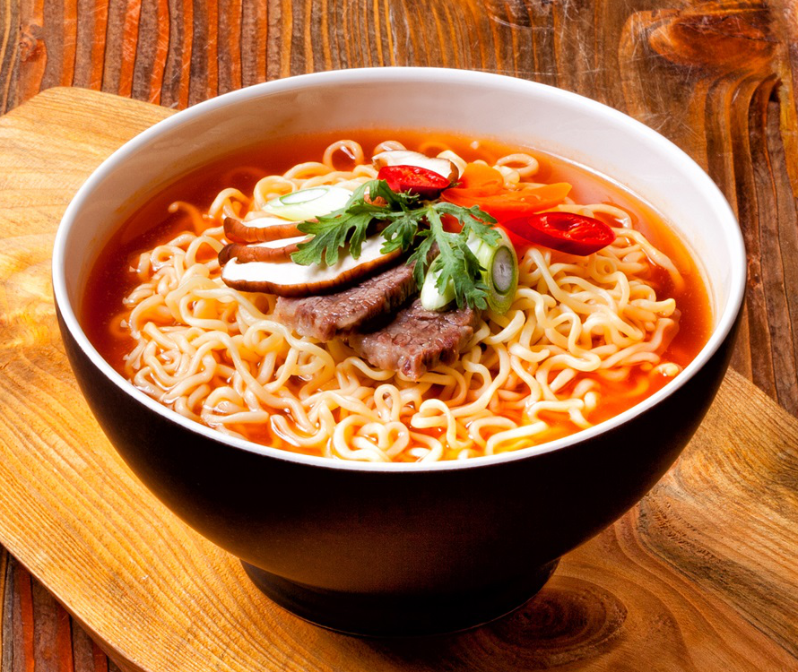
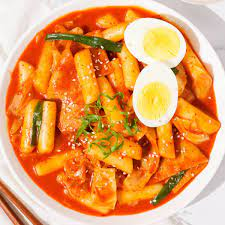
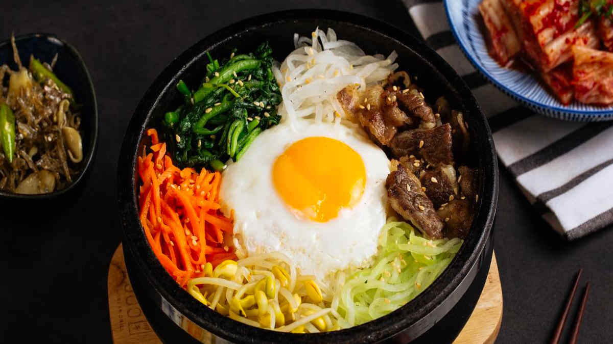
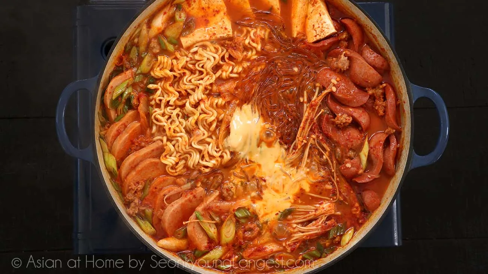
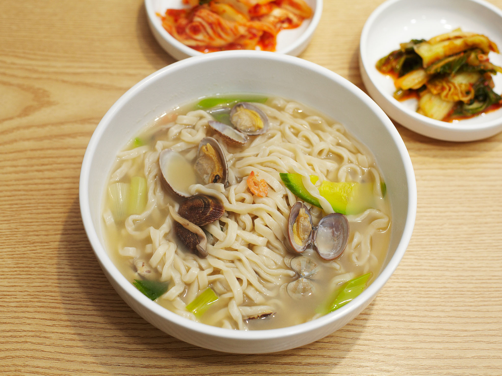
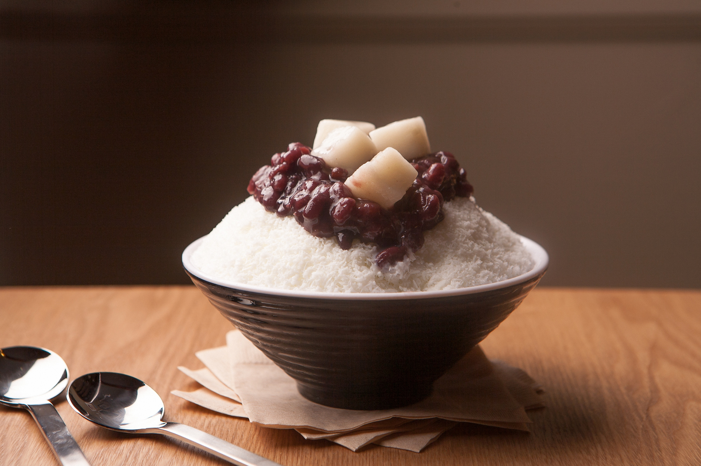
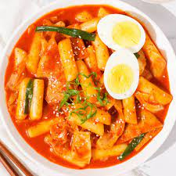
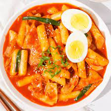

My City Seoul -
David Bak
Home
Pictures
About
Top 10
Places
To
Visit
In
Seoul
Gyeongbokgung
Namsan Seoul Tower
Myeongdong
Hangang Parks
Namdaemun Market
Lotte World
National Museum of Korea
Banpo Bridge
COEX Mall
Bukchon Hanok Village
Top 10
Foods
To
Eat
In
Seoul
Korean Spicy Ramyun

Kimbap [Gim-bap]
Tteokbokki

Korean Barbecue
Korean Fried Chicken
Bibimbap

Budaejjigae

Kalguksu

Samgyetang
Bingsu



 
